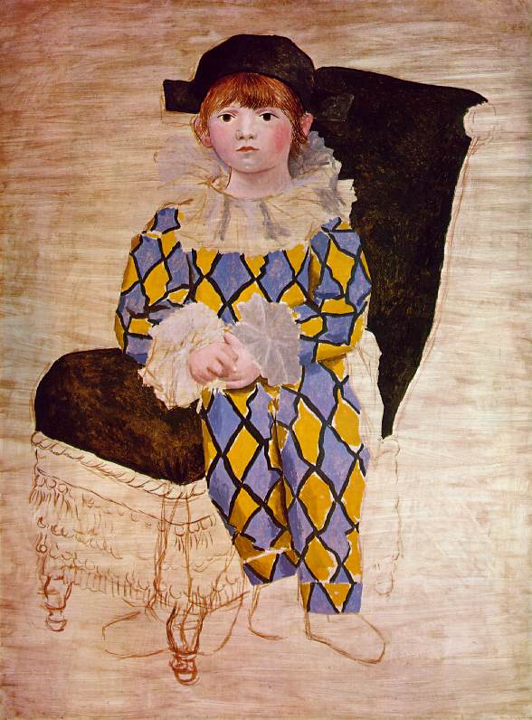
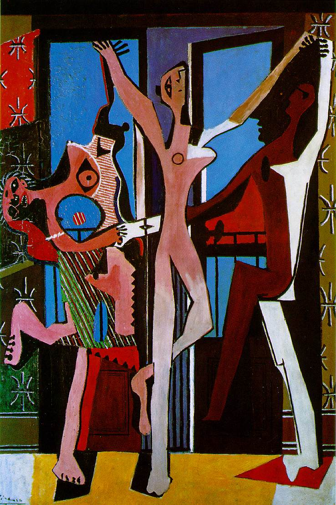

 
Nella ricerca della comprensione
e rappresentazione della realtà, Picasso utilizza contemporaneamente
o successivamente stili diversi, corrispondenti ai diversi momenti spirituali
dell’artista.
Ne Le tre danzatrici
la ripresa cubista è trasformata dalla violenta carica emozionale,
espressa dalle divergenze e dalle intersecazioni delle linee e dalle campiture
dissonanti dei colori.
Al contrario l’opera
Il figlio Paolo in costume da Arlecchino presenta una straordinaria tenerezza.